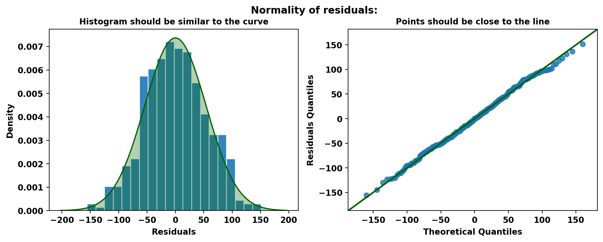
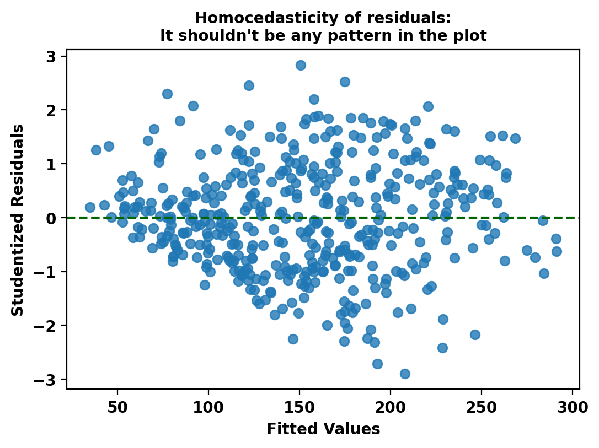
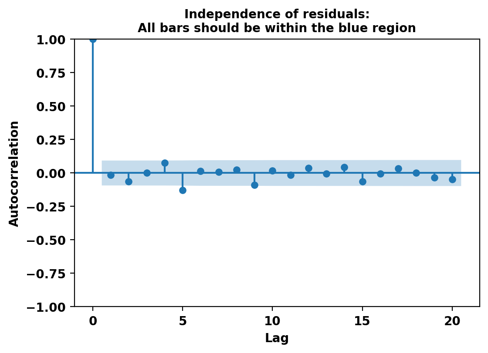
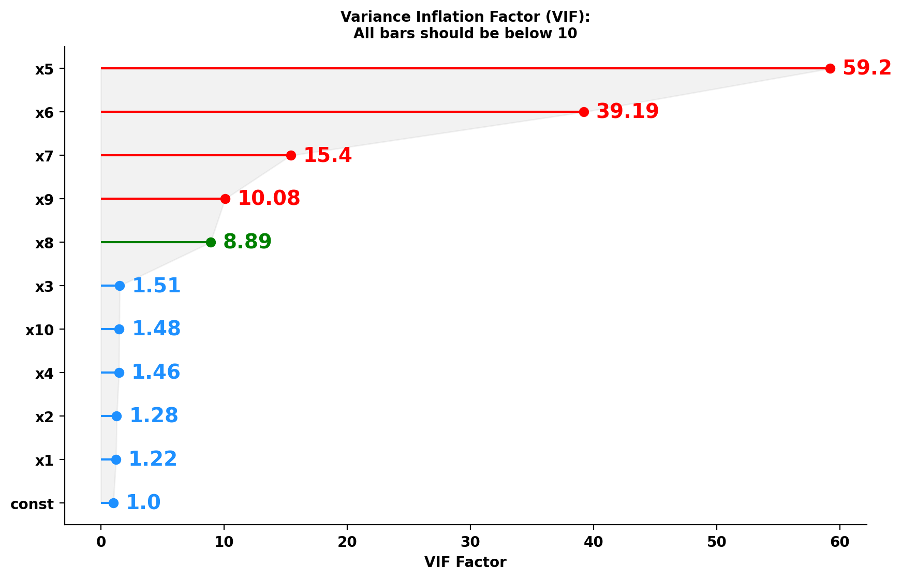

<!DOCTYPE html>
<html class="writer-html5" lang="en" >
<head>
  <meta charset="utf-8" /><meta name="generator" content="Docutils 0.18.1: http://docutils.sourceforge.net/" />

  <meta name="viewport" content="width=device-width, initial-scale=1.0" />
  <title>The testing module &mdash; ESTYP Documentation 0.1.0 documentation</title>
      <link rel="stylesheet" href="_static/pygments.css" type="text/css" />
      <link rel="stylesheet" href="_static/css/theme.css" type="text/css" />
      <link rel="stylesheet" href="_static/jupyter-sphinx.css" type="text/css" />
      <link rel="stylesheet" href="_static/thebelab.css" type="text/css" />
  <!--[if lt IE 9]>
    <script src="_static/js/html5shiv.min.js"></script>
  <![endif]-->
  
        <script src="_static/jquery.js"></script>
        <script src="_static/_sphinx_javascript_frameworks_compat.js"></script>
        <script data-url_root="./" id="documentation_options" src="_static/documentation_options.js"></script>
        <script src="_static/doctools.js"></script>
        <script src="_static/sphinx_highlight.js"></script>
        <script src="_static/thebelab-helper.js"></script>
        <script src="https://cdnjs.cloudflare.com/ajax/libs/require.js/2.3.4/require.min.js"></script>
        <script src="https://cdn.jsdelivr.net/npm/@jupyter-widgets/html-manager@^1.0.1/dist/embed-amd.js"></script>
    <script src="_static/js/theme.js"></script>
    <link rel="index" title="Index" href="genindex.html" />
    <link rel="search" title="Search" href="search.html" />
    <link rel="prev" title="The linear_model.stepwise module" href="estyp.linear_model.stepwise.html" /> 
</head>

<body class="wy-body-for-nav"> 
  <div class="wy-grid-for-nav">
    <nav data-toggle="wy-nav-shift" class="wy-nav-side">
      <div class="wy-side-scroll">
        <div class="wy-side-nav-search" >

          
          
          <a href="index.html" class="icon icon-home">
            ESTYP Documentation
          </a>
<div role="search">
  <form id="rtd-search-form" class="wy-form" action="search.html" method="get">
    <input type="text" name="q" placeholder="Search docs" aria-label="Search docs" />
    <input type="hidden" name="check_keywords" value="yes" />
    <input type="hidden" name="area" value="default" />
  </form>
</div>
        </div><div class="wy-menu wy-menu-vertical" data-spy="affix" role="navigation" aria-label="Navigation menu">
              <p class="caption" role="heading"><span class="caption-text">Contents:</span></p>
<ul class="current">
<li class="toctree-l1"><a class="reference internal" href="estyp.cluster.html">The <cite>cluster</cite> module</a></li>
<li class="toctree-l1"><a class="reference internal" href="estyp.linear_model.html">The <cite>linear_model</cite> module</a></li>
<li class="toctree-l1 current"><a class="current reference internal" href="#">The <cite>testing</cite> module</a><ul>
<li class="toctree-l2"><a class="reference internal" href="#checkmodel-class">CheckModel Class</a><ul>
<li class="toctree-l3"><a class="reference internal" href="#CheckModel"><code class="docutils literal notranslate"><span class="pre">CheckModel</span></code></a><ul>
<li class="toctree-l4"><a class="reference internal" href="#CheckModel.__init__"><code class="docutils literal notranslate"><span class="pre">CheckModel.__init__()</span></code></a></li>
<li class="toctree-l4"><a class="reference internal" href="#CheckModel.check_normality"><code class="docutils literal notranslate"><span class="pre">CheckModel.check_normality()</span></code></a></li>
<li class="toctree-l4"><a class="reference internal" href="#CheckModel.check_homocedasticity"><code class="docutils literal notranslate"><span class="pre">CheckModel.check_homocedasticity()</span></code></a></li>
<li class="toctree-l4"><a class="reference internal" href="#CheckModel.check_independence"><code class="docutils literal notranslate"><span class="pre">CheckModel.check_independence()</span></code></a></li>
<li class="toctree-l4"><a class="reference internal" href="#CheckModel.check_multicollinearity"><code class="docutils literal notranslate"><span class="pre">CheckModel.check_multicollinearity()</span></code></a></li>
<li class="toctree-l4"><a class="reference internal" href="#CheckModel.check_all"><code class="docutils literal notranslate"><span class="pre">CheckModel.check_all()</span></code></a></li>
</ul>
</li>
</ul>
</li>
<li class="toctree-l2"><a class="reference internal" href="#f-test-to-compare-two-variances">F Test to Compare Two Variances</a><ul>
<li class="toctree-l3"><a class="reference internal" href="#var_test"><code class="docutils literal notranslate"><span class="pre">var_test()</span></code></a></li>
</ul>
</li>
<li class="toctree-l2"><a class="reference internal" href="#student-s-t-test">Student’s t-Test</a><ul>
<li class="toctree-l3"><a class="reference internal" href="#t_test"><code class="docutils literal notranslate"><span class="pre">t_test()</span></code></a></li>
</ul>
</li>
<li class="toctree-l2"><a class="reference internal" href="#nested-models-f-test-function">Nested Models F-Test Function</a><ul>
<li class="toctree-l3"><a class="reference internal" href="#nested_models_test"><code class="docutils literal notranslate"><span class="pre">nested_models_test()</span></code></a></li>
</ul>
</li>
<li class="toctree-l2"><a class="reference internal" href="#test-of-equal-or-given-proportions">Test of Equal or Given Proportions</a><ul>
<li class="toctree-l3"><a class="reference internal" href="#prop_test"><code class="docutils literal notranslate"><span class="pre">prop_test()</span></code></a></li>
</ul>
</li>
<li class="toctree-l2"><a class="reference internal" href="#test-for-association-correlation-between-paired-samples">Test for Association/Correlation Between Paired Samples</a><ul>
<li class="toctree-l3"><a class="reference internal" href="#cor_test"><code class="docutils literal notranslate"><span class="pre">cor_test()</span></code></a></li>
</ul>
</li>
<li class="toctree-l2"><a class="reference internal" href="#pearson-s-chi-squared-test-for-count-data">Pearson’s Chi-squared Test for Count Data</a><ul>
<li class="toctree-l3"><a class="reference internal" href="#chisq_test"><code class="docutils literal notranslate"><span class="pre">chisq_test()</span></code></a></li>
</ul>
</li>
</ul>
</li>
</ul>

        </div>
      </div>
    </nav>

    <section data-toggle="wy-nav-shift" class="wy-nav-content-wrap"><nav class="wy-nav-top" aria-label="Mobile navigation menu" >
          <i data-toggle="wy-nav-top" class="fa fa-bars"></i>
          <a href="index.html">ESTYP Documentation</a>
      </nav>

      <div class="wy-nav-content">
        <div class="rst-content">
          <div role="navigation" aria-label="Page navigation">
  <ul class="wy-breadcrumbs">
      <li><a href="index.html" class="icon icon-home" aria-label="Home"></a></li>
      <li class="breadcrumb-item active">The <cite>testing</cite> module</li>
      <li class="wy-breadcrumbs-aside">
            <a href="_sources/estyp.testing.rst.txt" rel="nofollow"> View page source</a>
      </li>
  </ul>
  <hr/>
</div>
          <div role="main" class="document" itemscope="itemscope" itemtype="http://schema.org/Article">
           <div itemprop="articleBody">
             
  <section id="the-testing-module">
<h1>The <cite>testing</cite> module<a class="headerlink" href="#the-testing-module" title="Permalink to this heading"></a></h1>
<div class="toctree-wrapper compound">
</div>
<section id="checkmodel-class">
<h2>CheckModel Class<a class="headerlink" href="#checkmodel-class" title="Permalink to this heading"></a></h2>
<dl class="py class">
<dt class="sig sig-object py" id="CheckModel">
<em class="property"><span class="pre">class</span><span class="w"> </span></em><span class="sig-name descname"><span class="pre">CheckModel</span></span><span class="sig-paren">(</span><em class="sig-param"><span class="n"><span class="pre">fitted_model</span></span><span class="p"><span class="pre">:</span></span><span class="w"> </span><span class="n"><span class="pre">RegressionResultsWrapper</span></span></em><span class="sig-paren">)</span><a class="headerlink" href="#CheckModel" title="Permalink to this definition"></a></dt>
<dd><section id="check-linear-regression-assumptions">
<h3>Check Linear Regression Assumptions<a class="headerlink" href="#check-linear-regression-assumptions" title="Permalink to this heading"></a></h3>
<p>The <cite>CheckModel</cite> class provides methods to test the assumptions of the linear regression model.
These assumptions are:</p>
<ul class="simple">
<li><p>Normality of residuals</p></li>
<li><p>Homoscedasticity (equal variance) of residuals</p></li>
<li><p>Independence of residuals</p></li>
<li><p>No Multicollinearity among predictors</p></li>
</ul>
<dl class="py method">
<dt class="sig sig-object py" id="CheckModel.__init__">
<span class="sig-name descname"><span class="pre">__init__</span></span><span class="sig-paren">(</span><em class="sig-param"><span class="n"><span class="pre">fitted_model</span></span><span class="p"><span class="pre">:</span></span><span class="w"> </span><span class="n"><span class="pre">RegressionResultsWrapper</span></span></em><span class="sig-paren">)</span><a class="headerlink" href="#CheckModel.__init__" title="Permalink to this definition"></a></dt>
<dd><p>Initializes the CheckModel class.</p>
<dl class="field-list simple">
<dt class="field-odd">Parameters<span class="colon">:</span></dt>
<dd class="field-odd"><p><strong>fitted_model</strong> – The fitted linear regression model which is an instance of RegressionResultsWrapper.</p>
</dd>
</dl>
</dd></dl>

<dl class="py method">
<dt class="sig sig-object py" id="CheckModel.check_normality">
<span class="sig-name descname"><span class="pre">check_normality</span></span><span class="sig-paren">(</span><em class="sig-param"><span class="n"><span class="pre">alpha</span></span><span class="o"><span class="pre">=</span></span><span class="default_value"><span class="pre">0.05</span></span></em>, <em class="sig-param"><span class="n"><span class="pre">plot</span></span><span class="o"><span class="pre">=</span></span><span class="default_value"><span class="pre">True</span></span></em>, <em class="sig-param"><span class="n"><span class="pre">return_pvals</span></span><span class="o"><span class="pre">=</span></span><span class="default_value"><span class="pre">False</span></span></em><span class="sig-paren">)</span><a class="headerlink" href="#CheckModel.check_normality" title="Permalink to this definition"></a></dt>
<dd><p>Checks the normality assumption of the residuals using several statistical tests.</p>
</dd></dl>

<dl class="py method">
<dt class="sig sig-object py" id="CheckModel.check_homocedasticity">
<span class="sig-name descname"><span class="pre">check_homocedasticity</span></span><span class="sig-paren">(</span><em class="sig-param"><span class="n"><span class="pre">alpha</span></span><span class="o"><span class="pre">=</span></span><span class="default_value"><span class="pre">0.05</span></span></em>, <em class="sig-param"><span class="n"><span class="pre">plot</span></span><span class="o"><span class="pre">=</span></span><span class="default_value"><span class="pre">True</span></span></em>, <em class="sig-param"><span class="n"><span class="pre">return_pvals</span></span><span class="o"><span class="pre">=</span></span><span class="default_value"><span class="pre">False</span></span></em><span class="sig-paren">)</span><a class="headerlink" href="#CheckModel.check_homocedasticity" title="Permalink to this definition"></a></dt>
<dd><p>Checks the homoscedasticity assumption (equal variance of residuals) using several statistical tests.</p>
</dd></dl>

<dl class="py method">
<dt class="sig sig-object py" id="CheckModel.check_independence">
<span class="sig-name descname"><span class="pre">check_independence</span></span><span class="sig-paren">(</span><em class="sig-param"><span class="n"><span class="pre">alpha</span></span><span class="o"><span class="pre">=</span></span><span class="default_value"><span class="pre">0.05</span></span></em>, <em class="sig-param"><span class="n"><span class="pre">plot</span></span><span class="o"><span class="pre">=</span></span><span class="default_value"><span class="pre">True</span></span></em>, <em class="sig-param"><span class="n"><span class="pre">return_vals</span></span><span class="o"><span class="pre">=</span></span><span class="default_value"><span class="pre">False</span></span></em><span class="sig-paren">)</span><a class="headerlink" href="#CheckModel.check_independence" title="Permalink to this definition"></a></dt>
<dd><p>Checks the independence assumption of the residuals using several statistical tests.</p>
</dd></dl>

<dl class="py method">
<dt class="sig sig-object py" id="CheckModel.check_multicollinearity">
<span class="sig-name descname"><span class="pre">check_multicollinearity</span></span><span class="sig-paren">(</span><em class="sig-param"><span class="n"><span class="pre">plot</span></span><span class="o"><span class="pre">=</span></span><span class="default_value"><span class="pre">True</span></span></em>, <em class="sig-param"><span class="n"><span class="pre">return_cm</span></span><span class="o"><span class="pre">=</span></span><span class="default_value"><span class="pre">False</span></span></em><span class="sig-paren">)</span><a class="headerlink" href="#CheckModel.check_multicollinearity" title="Permalink to this definition"></a></dt>
<dd><p>Checks the multicollinearity assumption among predictors using the variance inflation factor (VIF).</p>
</dd></dl>

<dl class="py method">
<dt class="sig sig-object py" id="CheckModel.check_all">
<span class="sig-name descname"><span class="pre">check_all</span></span><span class="sig-paren">(</span><em class="sig-param"><span class="n"><span class="pre">alpha</span></span><span class="o"><span class="pre">=</span></span><span class="default_value"><span class="pre">0.05</span></span></em>, <em class="sig-param"><span class="n"><span class="pre">plot</span></span><span class="o"><span class="pre">=</span></span><span class="default_value"><span class="pre">True</span></span></em>, <em class="sig-param"><span class="n"><span class="pre">return_vals</span></span><span class="o"><span class="pre">=</span></span><span class="default_value"><span class="pre">False</span></span></em><span class="sig-paren">)</span><a class="headerlink" href="#CheckModel.check_all" title="Permalink to this definition"></a></dt>
<dd><p>Checks all the assumptions of the linear regression model.</p>
</dd></dl>

</section>
<section id="examples">
<h3>Examples<a class="headerlink" href="#examples" title="Permalink to this heading"></a></h3>
<div class="jupyter_cell docutils container">
<div class="cell_output docutils container">
</div>
</div>
<div class="jupyter_cell jupyter_container docutils container">
<div class="cell_input code_cell docutils container">
<div class="highlight-ipython3 notranslate"><div class="highlight"><pre><span></span><span class="kn">import</span> <span class="nn">statsmodels.api</span> <span class="k">as</span> <span class="nn">sm</span>
<span class="kn">from</span> <span class="nn">sklearn.datasets</span> <span class="kn">import</span> <span class="n">load_diabetes</span>
<span class="kn">from</span> <span class="nn">estyp.testing</span> <span class="kn">import</span> <span class="n">CheckModel</span>

<span class="n">diabetes</span> <span class="o">=</span> <span class="n">load_diabetes</span><span class="p">()</span>
<span class="n">X</span> <span class="o">=</span> <span class="n">diabetes</span><span class="p">[</span><span class="s2">&quot;data&quot;</span><span class="p">]</span>
<span class="n">y</span> <span class="o">=</span> <span class="n">diabetes</span><span class="p">[</span><span class="s2">&quot;target&quot;</span><span class="p">]</span>
<span class="n">X</span> <span class="o">=</span> <span class="n">sm</span><span class="o">.</span><span class="n">add_constant</span><span class="p">(</span><span class="n">X</span><span class="p">)</span>
<span class="n">model</span> <span class="o">=</span> <span class="n">sm</span><span class="o">.</span><span class="n">OLS</span><span class="p">(</span><span class="n">y</span><span class="p">,</span> <span class="n">X</span><span class="p">)</span>
<span class="n">fitted_model</span> <span class="o">=</span> <span class="n">model</span><span class="o">.</span><span class="n">fit</span><span class="p">()</span>
<span class="n">cm</span> <span class="o">=</span> <span class="n">CheckModel</span><span class="p">(</span><span class="n">fitted_model</span><span class="p">)</span>
<span class="n">cm</span><span class="o">.</span><span class="n">check_all</span><span class="p">()</span>
</pre></div>
</div>
</div>
<div class="cell_output docutils container">
<div class="output stream highlight-none notranslate"><div class="highlight"><pre><span></span>Made by Esteban Rucán. Contact me in LinkedIn: https://www.linkedin.com/in/estebanrucan/
</pre></div>
</div>
<div class="output stream highlight-none notranslate"><div class="highlight"><pre><span></span>Normality tests results:
- Residuals appear as normally distributed according to KS test (p-value = 0.974).
- Residuals appear as normally distributed according to Shapiro-Wilk test (p-value = 0.616).
- Residuals appear as normally distributed according to Jarque-Bera test (p-value = 0.496).
- Residuals appear as normally distributed according to Omni test (p-value = 0.471).
</pre></div>
</div>

<div class="output stream highlight-none notranslate"><div class="highlight"><pre><span></span>Homocedasticity tests results:
- Heteroscedasticity (non-constant error variance) detected according to Breusch-Pagan test (p-value = 0.003).
- Heteroscedasticity (non-constant error variance) detected according to White test (p-value = 0.012).
- Error variance appears to be homoscedastic according to Goldfeld-Quandt test (p-value = 0.595).
</pre></div>
</div>

<div class="output stream highlight-none notranslate"><div class="highlight"><pre><span></span>Independence tests results:
- Residuals appear to be independent and not autocorrelated according to DW test (DW-Statistic = 2.029)
- Residuals appear to be independent and not autocorrelated according to Box-Pierce test (p-value = 0.351).
- Residuals appear to be independent and not autocorrelated according to Breusch-Godfrey test (p-value = 0.184).
</pre></div>
</div>

<div class="output stream highlight-none notranslate"><div class="highlight"><pre><span></span>Multicollinearity test results:
- The model may have multicollinearity problems (condition number = 227.22).
</pre></div>
</div>

</div>
</div>
</section>
</dd></dl>

</section>
<section id="f-test-to-compare-two-variances">
<h2>F Test to Compare Two Variances<a class="headerlink" href="#f-test-to-compare-two-variances" title="Permalink to this heading"></a></h2>
<dl class="py function">
<dt class="sig sig-object py" id="var_test">
<span class="sig-name descname"><span class="pre">var_test</span></span><span class="sig-paren">(</span><em class="sig-param"><span class="n"><span class="pre">x</span></span></em>, <em class="sig-param"><span class="n"><span class="pre">y</span></span></em>, <em class="sig-param"><span class="n"><span class="pre">ratio</span></span><span class="o"><span class="pre">=</span></span><span class="default_value"><span class="pre">1</span></span></em>, <em class="sig-param"><span class="n"><span class="pre">alternative</span></span><span class="o"><span class="pre">=</span></span><span class="default_value"><span class="pre">'two-sided'</span></span></em>, <em class="sig-param"><span class="n"><span class="pre">conf_level</span></span><span class="o"><span class="pre">=</span></span><span class="default_value"><span class="pre">0.95</span></span></em><span class="sig-paren">)</span><a class="headerlink" href="#var_test" title="Permalink to this definition"></a></dt>
<dd><p>Performs an F test to compare the variances of two samples from normal populations. This function is inspired by the <cite>var.test()</cite> function of the software R.</p>
<dl class="field-list simple">
<dt class="field-odd">Parameters<span class="colon">:</span></dt>
<dd class="field-odd"><ul class="simple">
<li><p><strong>y</strong> (<em>x</em><em>,</em>) – numeric list, <cite>np.array</cite> or <cite>pd.Series</cite> of data values.</p></li>
<li><p><strong>ratio</strong> – the hypothesized ratio of the population variances of x and y.</p></li>
<li><p><strong>alternative</strong> – a character string specifying the alternative hypothesis, must be one of “two-sided” (default), “greater” or “less”. You can specify just the initial letter.</p></li>
<li><p><strong>conf_level</strong> – a number between 0 and 1 indicating the confidence level of the interval.</p></li>
</ul>
</dd>
</dl>
<section id="details">
<h3>Details<a class="headerlink" href="#details" title="Permalink to this heading"></a></h3>
<p>The null hypothesis is that the ratio of the variances of the populations from which x and y were drawn, is equal to ratio.</p>
</section>
<section id="value">
<h3>Value<a class="headerlink" href="#value" title="Permalink to this heading"></a></h3>
<p>An instance of the <cite>TestResults</cite> class containing the following attributes:</p>
<ul class="simple">
<li><p><cite>statistic</cite>: the value of the F test statistic.</p></li>
<li><p><cite>df</cite>: the degrees of freedom for the F test statistic.</p></li>
<li><p><cite>p_value</cite>: the p-value for the test.</p></li>
<li><p><cite>ci</cite>: a confidence interval for the ratio of the population variances.</p></li>
<li><p><cite>estimate</cite>: the ratio of the sample variances of x and y.</p></li>
<li><p><cite>alternative</cite>: a string describing the alternative hypothesis.</p></li>
</ul>
</section>
<section id="id1">
<h3>Examples<a class="headerlink" href="#id1" title="Permalink to this heading"></a></h3>
<div class="jupyter_cell jupyter_container docutils container">
<div class="cell_input code_cell docutils container">
<div class="highlight-ipython3 notranslate"><div class="highlight"><pre><span></span><span class="kn">import</span> <span class="nn">numpy</span> <span class="k">as</span> <span class="nn">np</span>
<span class="kn">from</span> <span class="nn">estyp.testing</span> <span class="kn">import</span> <span class="n">var_test</span>

<span class="n">np</span><span class="o">.</span><span class="n">random</span><span class="o">.</span><span class="n">seed</span><span class="p">(</span><span class="mi">2023</span><span class="p">)</span>
<span class="n">x</span> <span class="o">=</span> <span class="n">np</span><span class="o">.</span><span class="n">random</span><span class="o">.</span><span class="n">normal</span><span class="p">(</span><span class="n">size</span><span class="o">=</span><span class="mi">100</span><span class="p">)</span>
<span class="n">y</span> <span class="o">=</span> <span class="n">np</span><span class="o">.</span><span class="n">random</span><span class="o">.</span><span class="n">normal</span><span class="p">(</span><span class="n">size</span><span class="o">=</span><span class="mi">100</span><span class="p">)</span>

<span class="nb">print</span><span class="p">(</span><span class="s2">&quot;1 - F Test for Two Samples&quot;</span><span class="p">)</span>
<span class="nb">print</span><span class="p">(</span><span class="n">var_test</span><span class="p">(</span><span class="n">x</span><span class="p">,</span> <span class="n">y</span><span class="p">))</span>
<span class="nb">print</span><span class="p">(</span><span class="s2">&quot;2 - F Test for Two Samples changing alternative hypothesis&quot;</span><span class="p">)</span>
<span class="nb">print</span><span class="p">(</span><span class="n">var_test</span><span class="p">(</span><span class="n">x</span><span class="p">,</span> <span class="n">y</span><span class="p">,</span> <span class="n">alternative</span><span class="o">=</span><span class="s2">&quot;less&quot;</span><span class="p">))</span>
<span class="nb">print</span><span class="p">(</span><span class="s2">&quot;3 - F Test for Two Samples changing ratio&quot;</span><span class="p">)</span>
<span class="nb">print</span><span class="p">(</span><span class="n">var_test</span><span class="p">(</span><span class="n">x</span><span class="p">,</span> <span class="n">y</span><span class="p">,</span> <span class="n">ratio</span><span class="o">=</span><span class="mf">0.9</span><span class="p">,</span> <span class="n">alternative</span><span class="o">=</span><span class="s2">&quot;greater&quot;</span><span class="p">))</span>
</pre></div>
</div>
</div>
<div class="cell_output docutils container">
<div class="output stream highlight-none notranslate"><div class="highlight"><pre><span></span>1 - F Test for Two Samples

    F test to compare two variances
    F = 1.2805 | df: {&#39;x&#39;: 99, &#39;y&#39;: 99} | p-value = 0.2205
    alternative hypothesis: true ratio of variances is not equal to 1
    95 percent confidence interval:
     0.861545 1.903058
    sample estimates:
      ratio of variances: 1.280457
    
2 - F Test for Two Samples changing alternative hypothesis

    F test to compare two variances
    F = 1.2805 | df: {&#39;x&#39;: 99, &#39;y&#39;: 99} | p-value = 0.8898
    alternative hypothesis: true ratio of variances is less than 1
    95 percent confidence interval:
     0.000000 1.785035
    sample estimates:
      ratio of variances: 1.280457
    
3 - F Test for Two Samples changing ratio

    F test to compare two variances
    F = 1.4227 | df: {&#39;x&#39;: 99, &#39;y&#39;: 99} | p-value = 0.0405
    alternative hypothesis: true ratio of variances is greater than 0.9
    95 percent confidence interval:
     0.918508 inf
    sample estimates:
      ratio of variances: 1.280457
    
</pre></div>
</div>
</div>
</div>
</section>
</dd></dl>

</section>
<section id="student-s-t-test">
<h2>Student’s t-Test<a class="headerlink" href="#student-s-t-test" title="Permalink to this heading"></a></h2>
<dl class="py function">
<dt class="sig sig-object py" id="t_test">
<span class="sig-name descname"><span class="pre">t_test</span></span><span class="sig-paren">(</span><em class="sig-param"><span class="n"><span class="pre">x</span></span></em>, <em class="sig-param"><span class="n"><span class="pre">y</span></span><span class="o"><span class="pre">=</span></span><span class="default_value"><span class="pre">None</span></span></em>, <em class="sig-param"><span class="n"><span class="pre">alternative</span></span><span class="o"><span class="pre">=</span></span><span class="default_value"><span class="pre">'two-sided'</span></span></em>, <em class="sig-param"><span class="n"><span class="pre">mu</span></span><span class="o"><span class="pre">=</span></span><span class="default_value"><span class="pre">0</span></span></em>, <em class="sig-param"><span class="n"><span class="pre">paired</span></span><span class="o"><span class="pre">=</span></span><span class="default_value"><span class="pre">False</span></span></em>, <em class="sig-param"><span class="n"><span class="pre">var_equal</span></span><span class="o"><span class="pre">=</span></span><span class="default_value"><span class="pre">False</span></span></em>, <em class="sig-param"><span class="n"><span class="pre">conf_level</span></span><span class="o"><span class="pre">=</span></span><span class="default_value"><span class="pre">0.95</span></span></em><span class="sig-paren">)</span><a class="headerlink" href="#t_test" title="Permalink to this definition"></a></dt>
<dd><p>Performs one and two sample t-tests on groups of data. This function is inspired by the <cite>t.test()</cite> function of the software R.</p>
<dl class="field-list simple">
<dt class="field-odd">Parameters<span class="colon">:</span></dt>
<dd class="field-odd"><ul class="simple">
<li><p><strong>x</strong> – a (non-empty) numeric container of data values.</p></li>
<li><p><strong>y</strong> – an (optional) numeric container of data values.</p></li>
<li><p><strong>alternative</strong> – a string specifying the alternative hypothesis, must be one of “two-sided” (default), “greater” or “less”.</p></li>
<li><p><strong>mu</strong> – a number indicating the true value of the mean (or difference in means if you are performing a two sample test).</p></li>
<li><p><strong>paired</strong> – a logical indicating whether you want a paired t-test.</p></li>
<li><p><strong>var_equal</strong> – a logical variable indicating whether to treat the two variances as being equal. If <cite>True</cite> then the pooled variance is used to estimate the variance otherwise the Welch (or Satterthwaite) approximation to the degrees of freedom is used.</p></li>
<li><p><strong>conf_level</strong> – a number between 0 and 1 indicating the confidence level of the interval.</p></li>
</ul>
</dd>
</dl>
<section id="id2">
<h3>Details<a class="headerlink" href="#id2" title="Permalink to this heading"></a></h3>
<p>alternative = “greater” is the alternative that x has a larger mean than y. For the one-sample case: that the mean is positive.</p>
<p>If <cite>paired</cite> is <cite>True</cite> then both x and y must be specified and they must be the same length. Missing values are silently removed (in pairs if <cite>paired</cite> is <cite>True</cite>). If <cite>var_equal</cite> is <cite>True</cite> then the pooled estimate of the variance is used. By default, if <cite>var_equal</cite> is <cite>False</cite> then the variance is estimated separately for both groups and the Welch modification to the degrees of freedom is used.</p>
</section>
<section id="id3">
<h3>Value<a class="headerlink" href="#id3" title="Permalink to this heading"></a></h3>
<p>An instance of the <cite>TestResults</cite> class containing the following attributes:</p>
<ul class="simple">
<li><p><cite>statistic</cite>: the value of the t-statistic.</p></li>
<li><p><cite>df</cite>: the degrees of freedom for the t-statistic.</p></li>
<li><p><cite>p_value</cite>: the p-value for the test.</p></li>
<li><p><cite>ci</cite>: a confidence interval for the mean appropriate to the specified alternative hypothesis.</p></li>
<li><p><cite>estimate</cite>: the estimated mean or list of estimated means depending on whether it was a one-sample test or a two-sample test.</p></li>
<li><p><cite>alternative</cite>: a character string describing the alternative hypothesis.</p></li>
<li><p><cite>mu</cite>: the mean of the null hypothesis.</p></li>
</ul>
</section>
<section id="id4">
<h3>Examples<a class="headerlink" href="#id4" title="Permalink to this heading"></a></h3>
<div class="jupyter_cell jupyter_container docutils container">
<div class="cell_input code_cell docutils container">
<div class="highlight-ipython3 notranslate"><div class="highlight"><pre><span></span><span class="kn">import</span> <span class="nn">numpy</span> <span class="k">as</span> <span class="nn">np</span>
<span class="kn">from</span> <span class="nn">estyp.testing</span> <span class="kn">import</span> <span class="n">t_test</span>

<span class="n">np</span><span class="o">.</span><span class="n">random</span><span class="o">.</span><span class="n">seed</span><span class="p">(</span><span class="mi">2023</span><span class="p">)</span>
<span class="n">x</span> <span class="o">=</span> <span class="n">np</span><span class="o">.</span><span class="n">random</span><span class="o">.</span><span class="n">normal</span><span class="p">(</span><span class="n">size</span><span class="o">=</span><span class="mi">100</span><span class="p">)</span>
<span class="n">y</span> <span class="o">=</span> <span class="n">np</span><span class="o">.</span><span class="n">random</span><span class="o">.</span><span class="n">normal</span><span class="p">(</span><span class="n">size</span><span class="o">=</span><span class="mi">100</span><span class="p">)</span>
<span class="n">mu</span> <span class="o">=</span> <span class="mf">0.1</span>

<span class="nb">print</span><span class="p">(</span><span class="s2">&quot;1 - One Sample Test&quot;</span><span class="p">)</span>
<span class="nb">print</span><span class="p">(</span><span class="n">t_test</span><span class="p">(</span><span class="n">x</span><span class="p">,</span> <span class="n">mu</span><span class="o">=</span><span class="n">mu</span><span class="p">,</span> <span class="n">alternative</span><span class="o">=</span><span class="s2">&quot;less&quot;</span><span class="p">))</span>
<span class="nb">print</span><span class="p">(</span><span class="s2">&quot;2 - Two Sample Test&quot;</span><span class="p">)</span>
<span class="nb">print</span><span class="p">(</span><span class="n">t_test</span><span class="p">(</span><span class="n">x</span><span class="p">,</span> <span class="n">y</span><span class="p">,</span> <span class="n">mu</span><span class="o">=</span><span class="n">mu</span><span class="p">))</span>
<span class="nb">print</span><span class="p">(</span><span class="s2">&quot;3 - Two Sample Test with Equal Variances&quot;</span><span class="p">)</span>
<span class="nb">print</span><span class="p">(</span><span class="n">t_test</span><span class="p">(</span><span class="n">x</span><span class="p">,</span> <span class="n">y</span><span class="p">,</span> <span class="n">mu</span><span class="o">=</span><span class="n">mu</span><span class="p">,</span> <span class="n">var_equal</span><span class="o">=</span><span class="kc">True</span><span class="p">,</span> <span class="n">alternative</span><span class="o">=</span><span class="s2">&quot;greater&quot;</span><span class="p">))</span>
<span class="nb">print</span><span class="p">(</span><span class="s2">&quot;4 - Paired Test&quot;</span><span class="p">)</span>
<span class="nb">print</span><span class="p">(</span><span class="n">t_test</span><span class="p">(</span><span class="n">x</span><span class="p">,</span> <span class="n">y</span><span class="p">,</span> <span class="n">mu</span><span class="o">=</span><span class="n">mu</span><span class="p">,</span> <span class="n">paired</span><span class="o">=</span><span class="kc">True</span><span class="p">))</span>
</pre></div>
</div>
</div>
<div class="cell_output docutils container">
<div class="output stream highlight-none notranslate"><div class="highlight"><pre><span></span>1 - One Sample Test

    One Sample t-test
    T = -1.3237 | df: 99 | p-value = 0.0943
    alternative hypothesis: true mean is less than 0.1
    95 percent confidence interval:
     -inf 0.138028
    sample estimates:
      mean of x: -0.049492
    
2 - Two Sample Test

    Welch&#39;s Two Sample t-test
    T = -1.2046 | df: 195.05 | p-value = 0.2298
    alternative hypothesis: true difference in means is not equal to 0.1
    95 percent confidence interval:
     -0.478794 0.115698
    sample estimates:
      [mean of x, mean of y]: [-0.049492, 0.032056]
    
3 - Two Sample Test with Equal Variances

    Two Sample t-test
    T = -1.2046 | df: 198 | p-value = 0.8851
    alternative hypothesis: true difference in means is greater than 0.1
    95 percent confidence interval:
     -0.430622 inf
    sample estimates:
      [mean of x, mean of y]: [-0.049492, 0.032056]
    
4 - Paired Test

    Paired t-test
    T = -1.2772 | df: 99 | p-value = 0.2045
    alternative hypothesis: true mean difference is not equal to 0.1
    95 percent confidence interval:
     -0.463595 0.100499
    sample estimates:
      [mean of x, mean of y]: [-0.049492, 0.032056]
    
</pre></div>
</div>
</div>
</div>
</section>
</dd></dl>

</section>
<section id="nested-models-f-test-function">
<h2>Nested Models F-Test Function<a class="headerlink" href="#nested-models-f-test-function" title="Permalink to this heading"></a></h2>
<dl class="py function">
<dt class="sig sig-object py" id="nested_models_test">
<span class="sig-name descname"><span class="pre">nested_models_test</span></span><span class="sig-paren">(</span><em class="sig-param"><span class="n"><span class="pre">fitted_small_model</span></span></em>, <em class="sig-param"><span class="n"><span class="pre">fitted_big_model</span></span></em><span class="sig-paren">)</span><a class="headerlink" href="#nested_models_test" title="Permalink to this definition"></a></dt>
<dd><p>This function performs a nested models F-test using deviance from two fitted models from statsmodels library. The test compares two nested models: a larger or “big” model and a smaller or “small” model. The purpose of this test is to determine whether the larger model significantly improves the model fit compared to the smaller model by adding additional predictors.</p>
<dl class="field-list simple">
<dt class="field-odd">Parameters<span class="colon">:</span></dt>
<dd class="field-odd"><ul class="simple">
<li><p><strong>fitted_small_model</strong> (<em>RegressionResultsWrapper</em>) – The fitted model representing the smaller/nested model. It has to come from statsmodels.</p></li>
<li><p><strong>fitted_big_model</strong> (<em>RegressionResultsWrapper</em>) – The fitted model representing the larger model, which includes all the predictors from the smaller model and potentially additional predictors. It has to come from statsmodels.</p></li>
</ul>
</dd>
</dl>
<section id="returns">
<h3>Returns:<a class="headerlink" href="#returns" title="Permalink to this heading"></a></h3>
<p>The function returns an object of class TestResults that contains the following information:</p>
<ul class="simple">
<li><p><cite>method</cite>: A string indicating the name of the statistical test (Nested models F-test).</p></li>
<li><p><cite>statistic</cite>: The computed F-statistic value.</p></li>
<li><p><cite>estimate</cite>: The difference in deviances between the models.</p></li>
<li><p><cite>df</cite>: A dictionary with the degrees of freedom for the numerator and denominator of the F-statistic.</p></li>
<li><p><cite>p_value</cite>: The p-value associated with the F-statistic.</p></li>
</ul>
</section>
<section id="id5">
<h3>Examples:<a class="headerlink" href="#id5" title="Permalink to this heading"></a></h3>
<ul class="simple">
<li><p>Example 1: With OLS</p></li>
</ul>
<div class="jupyter_cell jupyter_container docutils container">
<div class="cell_input code_cell docutils container">
<div class="highlight-ipython3 notranslate"><div class="highlight"><pre><span></span><span class="kn">import</span> <span class="nn">pandas</span> <span class="k">as</span> <span class="nn">pd</span>
<span class="kn">import</span> <span class="nn">statsmodels.api</span> <span class="k">as</span> <span class="nn">sm</span>
<span class="kn">from</span> <span class="nn">estyp.testing</span> <span class="kn">import</span> <span class="n">nested_models_test</span>

<span class="n">data</span> <span class="o">=</span> <span class="n">pd</span><span class="o">.</span><span class="n">DataFrame</span><span class="p">({</span>
    <span class="s2">&quot;x&quot;</span><span class="p">:</span> <span class="p">[</span><span class="mf">2.01</span><span class="p">,</span> <span class="mf">2.99</span><span class="p">,</span> <span class="mf">4.01</span><span class="p">,</span> <span class="mf">5.01</span><span class="p">,</span> <span class="mf">6.89</span><span class="p">],</span>
    <span class="s2">&quot;y&quot;</span><span class="p">:</span> <span class="p">[</span><span class="mi">2</span><span class="p">,</span> <span class="mi">3</span><span class="p">,</span> <span class="mi">4</span><span class="p">,</span> <span class="mi">5</span><span class="p">,</span> <span class="mi">6</span><span class="p">]</span>
<span class="p">})</span>
<span class="n">model_small</span> <span class="o">=</span> <span class="n">sm</span><span class="o">.</span><span class="n">OLS</span><span class="o">.</span><span class="n">from_formula</span><span class="p">(</span><span class="s2">&quot;y ~ 1&quot;</span><span class="p">,</span> <span class="n">data</span><span class="p">)</span><span class="o">.</span><span class="n">fit</span><span class="p">()</span>
<span class="n">model_big</span> <span class="o">=</span> <span class="n">sm</span><span class="o">.</span><span class="n">OLS</span><span class="o">.</span><span class="n">from_formula</span><span class="p">(</span><span class="s2">&quot;y ~ x&quot;</span><span class="p">,</span> <span class="n">data</span><span class="p">)</span><span class="o">.</span><span class="n">fit</span><span class="p">()</span>
<span class="nb">print</span><span class="p">(</span><span class="n">nested_models_test</span><span class="p">(</span><span class="n">model_small</span><span class="p">,</span> <span class="n">model_big</span><span class="p">))</span>
</pre></div>
</div>
</div>
<div class="cell_output docutils container">
<div class="output stream highlight-none notranslate"><div class="highlight"><pre><span></span>
    Nested models F-test
    F = 134.2747 | df: {&#39;df_num&#39;: 1, &#39;df_den&#39;: 3} | p-value = 0.0014
    alternative hypothesis: big model is true
    sample estimates:
      Difference in deviances between models: 9.781460
    
</pre></div>
</div>
</div>
</div>
<ul class="simple">
<li><p>Example 2: With Logit</p></li>
</ul>
<div class="jupyter_cell jupyter_container docutils container">
<div class="cell_input code_cell docutils container">
<div class="highlight-ipython3 notranslate"><div class="highlight"><pre><span></span><span class="n">data</span> <span class="o">=</span> <span class="n">pd</span><span class="o">.</span><span class="n">DataFrame</span><span class="p">({</span>
    <span class="s2">&quot;x&quot;</span><span class="p">:</span> <span class="p">[</span><span class="mf">2.01</span><span class="p">,</span> <span class="mf">2.99</span><span class="p">,</span> <span class="mf">4.01</span><span class="p">,</span> <span class="mf">3.01</span><span class="p">,</span> <span class="mf">4.89</span><span class="p">],</span>
    <span class="s2">&quot;y&quot;</span><span class="p">:</span> <span class="p">[</span><span class="mi">0</span><span class="p">,</span> <span class="mi">1</span><span class="p">,</span> <span class="mi">1</span><span class="p">,</span> <span class="mi">0</span><span class="p">,</span> <span class="mi">1</span><span class="p">]</span>
<span class="p">})</span>
<span class="n">model_small</span> <span class="o">=</span> <span class="n">sm</span><span class="o">.</span><span class="n">Logit</span><span class="o">.</span><span class="n">from_formula</span><span class="p">(</span><span class="s2">&quot;y ~ 1&quot;</span><span class="p">,</span> <span class="n">data</span><span class="p">)</span><span class="o">.</span><span class="n">fit</span><span class="p">()</span>
<span class="n">model_big</span> <span class="o">=</span> <span class="n">sm</span><span class="o">.</span><span class="n">Logit</span><span class="o">.</span><span class="n">from_formula</span><span class="p">(</span><span class="s2">&quot;y ~ x&quot;</span><span class="p">,</span> <span class="n">data</span><span class="p">)</span><span class="o">.</span><span class="n">fit</span><span class="p">()</span>
<span class="nb">print</span><span class="p">(</span><span class="n">nested_models_test</span><span class="p">(</span><span class="n">model_small</span><span class="p">,</span> <span class="n">model_big</span><span class="p">))</span>
</pre></div>
</div>
</div>
<div class="cell_output docutils container">
<div class="output stream highlight-none notranslate"><div class="highlight"><pre><span></span>Optimization terminated successfully.
         Current function value: 0.673012
         Iterations 4
Optimization terminated successfully.
         Current function value: 0.290002
         Iterations 10

    Nested models F-test
    F = 3.9621 | df: {&#39;df_num&#39;: 1, &#39;df_den&#39;: 3} | p-value = 0.1406
    alternative hypothesis: big model is true
    sample estimates:
      Difference in deviances between models: 3.830096
    
</pre></div>
</div>
</div>
</div>
<ul class="simple">
<li><p>Example 3: With GLM</p></li>
</ul>
<div class="jupyter_cell jupyter_container docutils container">
<div class="cell_input code_cell docutils container">
<div class="highlight-ipython3 notranslate"><div class="highlight"><pre><span></span><span class="n">data</span> <span class="o">=</span> <span class="n">pd</span><span class="o">.</span><span class="n">DataFrame</span><span class="p">({</span>
    <span class="s2">&quot;x&quot;</span><span class="p">:</span> <span class="p">[</span><span class="mf">2.01</span><span class="p">,</span> <span class="mf">2.99</span><span class="p">,</span> <span class="mf">4.01</span><span class="p">,</span> <span class="mf">5.01</span><span class="p">,</span> <span class="mf">6.89</span><span class="p">],</span>
    <span class="s2">&quot;y&quot;</span><span class="p">:</span> <span class="p">[</span><span class="mi">2</span><span class="p">,</span> <span class="mi">3</span><span class="p">,</span> <span class="mi">4</span><span class="p">,</span> <span class="mi">5</span><span class="p">,</span> <span class="mi">6</span><span class="p">]</span>
<span class="p">})</span>
<span class="n">model_small</span> <span class="o">=</span> <span class="n">sm</span><span class="o">.</span><span class="n">GLM</span><span class="o">.</span><span class="n">from_formula</span><span class="p">(</span><span class="s2">&quot;y ~ 1&quot;</span><span class="p">,</span> <span class="n">data</span><span class="p">,</span> <span class="n">family</span> <span class="o">=</span> <span class="n">sm</span><span class="o">.</span><span class="n">families</span><span class="o">.</span><span class="n">Gamma</span><span class="p">())</span><span class="o">.</span><span class="n">fit</span><span class="p">()</span>
<span class="n">model_big</span> <span class="o">=</span> <span class="n">sm</span><span class="o">.</span><span class="n">GLM</span><span class="o">.</span><span class="n">from_formula</span><span class="p">(</span><span class="s2">&quot;y ~ x&quot;</span><span class="p">,</span> <span class="n">data</span><span class="p">,</span> <span class="n">family</span> <span class="o">=</span> <span class="n">sm</span><span class="o">.</span><span class="n">families</span><span class="o">.</span><span class="n">Gamma</span><span class="p">())</span><span class="o">.</span><span class="n">fit</span><span class="p">()</span>
<span class="nb">print</span><span class="p">(</span><span class="n">nested_models_test</span><span class="p">(</span><span class="n">model_small</span><span class="p">,</span> <span class="n">model_big</span><span class="p">))</span>
</pre></div>
</div>
</div>
<div class="cell_output docutils container">
<div class="output stream highlight-none notranslate"><div class="highlight"><pre><span></span>
    Nested models F-test
    F = 13.0985 | df: {&#39;df_num&#39;: 1, &#39;df_den&#39;: 3} | p-value = 0.0363
    alternative hypothesis: big model is true
    sample estimates:
      Difference in deviances between models: 0.573166
    
</pre></div>
</div>
</div>
</div>
</section>
</dd></dl>

</section>
<section id="test-of-equal-or-given-proportions">
<h2>Test of Equal or Given Proportions<a class="headerlink" href="#test-of-equal-or-given-proportions" title="Permalink to this heading"></a></h2>
<dl class="py function">
<dt class="sig sig-object py" id="prop_test">
<span class="sig-name descname"><span class="pre">prop_test</span></span><span class="sig-paren">(</span><em class="sig-param"><span class="n"><span class="pre">x</span></span></em>, <em class="sig-param"><span class="n"><span class="pre">n</span></span><span class="o"><span class="pre">=</span></span><span class="default_value"><span class="pre">None</span></span></em>, <em class="sig-param"><span class="n"><span class="pre">p</span></span><span class="o"><span class="pre">=</span></span><span class="default_value"><span class="pre">None</span></span></em>, <em class="sig-param"><span class="n"><span class="pre">alternative</span></span><span class="o"><span class="pre">=</span></span><span class="default_value"><span class="pre">'two-sided'</span></span></em>, <em class="sig-param"><span class="n"><span class="pre">conf_level</span></span><span class="o"><span class="pre">=</span></span><span class="default_value"><span class="pre">0.95</span></span></em>, <em class="sig-param"><span class="n"><span class="pre">correct</span></span><span class="o"><span class="pre">=</span></span><span class="default_value"><span class="pre">True</span></span></em><span class="sig-paren">)</span><a class="headerlink" href="#prop_test" title="Permalink to this definition"></a></dt>
<dd><dl class="field-list simple">
<dt class="field-odd">Parameters<span class="colon">:</span></dt>
<dd class="field-odd"><ul class="simple">
<li><p><strong>x</strong> (<em>array_like</em>) – A vector of counts of successes, a one-dimensional table with two entries, or a two-dimensional table (or matrix) with 2 columns, giving the counts of successes and failures, respectively.</p></li>
<li><p><strong>n</strong> (<em>array_like</em><em>, </em><em>optional</em>) – A vector of counts of trials; ignored if x is a matrix or a table. If not provided, it is calculated as the sum of the elements in x.</p></li>
<li><p><strong>p</strong> (<em>array_like</em><em>, </em><em>optional</em>) – A vector of probabilities of success. The length of p must be the same as the number of groups specified by x, and its elements must be greater than 0 and less than 1.</p></li>
<li><p><strong>alternative</strong> (<em>str</em><em>, </em><em>optional</em>) – A character string specifying the alternative hypothesis, must be one of “two-sided” (default), “greater” or “less”. You can specify just the initial letter. Only used for testing the null that a single proportion equals a given value, or that two proportions are equal; ignored otherwise.</p></li>
<li><p><strong>conf_level</strong> (<em>float</em><em>, </em><em>optional</em>) – Confidence level of the returned confidence interval. Must be a single number between 0 and 1. Only used when testing the null that a single proportion equals a given value, or that two proportions are equal; ignored otherwise.</p></li>
<li><p><strong>correct</strong> (<em>bool</em><em>, </em><em>optional</em>) – A logical indicating whether Yates’ continuity correction should be applied where possible.</p></li>
</ul>
</dd>
</dl>
<section id="id6">
<h3>Returns<a class="headerlink" href="#id6" title="Permalink to this heading"></a></h3>
<dl class="field-list simple">
<dt class="field-odd">rtype<span class="colon">:</span></dt>
<dd class="field-odd"><p>TestResults</p>
</dd>
</dl>
<p>A data class with the following attributes:</p>
<ul class="simple">
<li><p><cite>statistic</cite>: float, The value of Pearson’s chi-squared test statistic.</p></li>
<li><p><cite>df</cite>: int, The degrees of freedom of the approximate chi-squared distribution of the test statistic.</p></li>
<li><p><cite>p_value</cite>: float, The p-value of the test.</p></li>
<li><p><cite>estimate</cite>: array_like, A vector with the sample proportions x/n.</p></li>
<li><p><cite>null_value</cite>: float or array_like, The value of p if specified by the null hypothesis.</p></li>
<li><p><cite>conf_int</cite>: array_like, A confidence interval for the true proportion if there is one group, or for the difference in proportions if there are 2 groups and p is not given, or None otherwise. In the cases where it is not None, the returned confidence interval has an asymptotic confidence level as specified by conf_level, and is appropriate to the specified alternative hypothesis.</p></li>
<li><p><cite>alternative</cite>: str, A character string describing the alternative.</p></li>
<li><p><cite>method</cite>: str, A character string indicating the method used, and whether Yates’ continuity correction was applied.</p></li>
</ul>
</section>
<section id="id7">
<h3>Examples<a class="headerlink" href="#id7" title="Permalink to this heading"></a></h3>
<div class="jupyter_cell jupyter_container docutils container">
<div class="cell_input code_cell docutils container">
<div class="highlight-ipython3 notranslate"><div class="highlight"><pre><span></span><span class="kn">import</span> <span class="nn">numpy</span> <span class="k">as</span> <span class="nn">np</span>
<span class="kn">from</span> <span class="nn">scipy</span> <span class="kn">import</span> <span class="n">stats</span>
<span class="kn">from</span> <span class="nn">estyp.testing</span> <span class="kn">import</span> <span class="n">prop_test</span>

<span class="n">x</span> <span class="o">=</span> <span class="n">np</span><span class="o">.</span><span class="n">array</span><span class="p">([</span><span class="mi">83</span><span class="p">,</span> <span class="mi">90</span><span class="p">,</span> <span class="mi">129</span><span class="p">,</span> <span class="mi">70</span><span class="p">])</span>
<span class="n">n</span> <span class="o">=</span> <span class="n">np</span><span class="o">.</span><span class="n">array</span><span class="p">([</span><span class="mi">86</span><span class="p">,</span> <span class="mi">93</span><span class="p">,</span> <span class="mi">136</span><span class="p">,</span> <span class="mi">82</span><span class="p">])</span>
<span class="n">result</span> <span class="o">=</span> <span class="n">prop_test</span><span class="p">(</span><span class="n">x</span><span class="p">,</span> <span class="n">n</span><span class="p">)</span>
<span class="nb">print</span><span class="p">(</span><span class="n">result</span><span class="p">)</span>
</pre></div>
</div>
</div>
<div class="cell_output docutils container">
<div class="output stream highlight-none notranslate"><div class="highlight"><pre><span></span>
    4-sample test for given proportions without continuity correction
    X-squared = 12.6004 | df: 3 | p-value = 0.0056
    alternative hypothesis: the true proportions are not all equal
    sample estimates:
      proportion(s): [0.965116, 0.967742, 0.948529, 0.853659]
    
</pre></div>
</div>
</div>
</div>
</section>
</dd></dl>

</section>
<section id="test-for-association-correlation-between-paired-samples">
<h2>Test for Association/Correlation Between Paired Samples<a class="headerlink" href="#test-for-association-correlation-between-paired-samples" title="Permalink to this heading"></a></h2>
<dl class="py function">
<dt class="sig sig-object py" id="cor_test">
<span class="sig-name descname"><span class="pre">cor_test</span></span><span class="sig-paren">(</span><em class="sig-param"><span class="n"><span class="pre">x</span></span></em>, <em class="sig-param"><span class="n"><span class="pre">y</span></span></em>, <em class="sig-param"><span class="n"><span class="pre">method</span></span><span class="o"><span class="pre">=</span></span><span class="default_value"><span class="pre">'pearson'</span></span></em>, <em class="sig-param"><span class="n"><span class="pre">alternative</span></span><span class="o"><span class="pre">=</span></span><span class="default_value"><span class="pre">'two-sided'</span></span></em>, <em class="sig-param"><span class="n"><span class="pre">conf_level</span></span><span class="o"><span class="pre">=</span></span><span class="default_value"><span class="pre">0.95</span></span></em>, <em class="sig-param"><span class="n"><span class="pre">continuity</span></span><span class="o"><span class="pre">=</span></span><span class="default_value"><span class="pre">False</span></span></em><span class="sig-paren">)</span><a class="headerlink" href="#cor_test" title="Permalink to this definition"></a></dt>
<dd><dl class="field-list simple">
<dt class="field-odd">Parameters<span class="colon">:</span></dt>
<dd class="field-odd"><ul class="simple">
<li><p><strong>x</strong> (<em>array_like</em>) – Numeric one-dimensional arrays, lists or pd.Series of data values. x and y must have the same length.</p></li>
<li><p><strong>y</strong> (<em>array_like</em>) – Numeric one-dimensional arrays, lists or pd.Series of data values. x and y must have the same length.</p></li>
<li><p><strong>method</strong> (<em>str</em><em>, </em><em>optional</em>) – A string indicating which correlation coefficient is to be used for the test. One of “pearson”, “kendall”, or “spearman”.</p></li>
<li><p><strong>alternative</strong> (<em>str</em><em>, </em><em>optional</em>) – Indicates the alternative hypothesis and must be one of “two-sided”, “greater” or “less”. “greater” corresponds to positive association, “less” to negative association.</p></li>
<li><p><strong>conf_level</strong> (<em>float</em><em>, </em><em>optional</em>) – Confidence level for the returned confidence interval. Currently only used for the Pearson product moment correlation coefficient if there are at least 4 complete pairs of observations.</p></li>
<li><p><strong>continuity</strong> (<em>bool</em><em>, </em><em>optional</em>) – If True, a continuity correction is used for Kendall’s tau.</p></li>
</ul>
</dd>
</dl>
<section id="id8">
<h3>Returns<a class="headerlink" href="#id8" title="Permalink to this heading"></a></h3>
<dl class="field-list simple">
<dt class="field-odd">rtype<span class="colon">:</span></dt>
<dd class="field-odd"><p>TestResults</p>
</dd>
</dl>
<p>A TestResults instance containing the following attributes:</p>
<ul class="simple">
<li><p><cite>statistic</cite>: the value of the test statistic.</p></li>
<li><p><cite>df</cite> (if applicable): the degrees of freedom of the test statistic.</p></li>
<li><p><cite>p_value</cite>: the p-value of the test.</p></li>
<li><p><cite>estimate</cite>: the estimated measure of association.</p></li>
<li><p><cite>null_value</cite>: the value of the association measure under the null hypothesis, always 0.</p></li>
<li><p><cite>alternative</cite>: a string describing the alternative hypothesis.</p></li>
<li><p><cite>method</cite>: a string indicating how the association was measured.</p></li>
<li><p><cite>conf_int</cite> (if applicable): a confidence interval for the measure of association.</p></li>
</ul>
</section>
<section id="id9">
<h3>Details<a class="headerlink" href="#id9" title="Permalink to this heading"></a></h3>
<p>The three methods each estimate the association between paired samples and compute a test of the value being zero.
They use different measures of association, all in the range [-1, 1] with 0 indicating no association.
These are sometimes referred to as tests of no correlation, but that term is often confined to the default method.</p>
</section>
<section id="references">
<h3>References<a class="headerlink" href="#references" title="Permalink to this heading"></a></h3>
<dl class="simple">
<dt>[1] D. J. Best &amp; D. E. Roberts (1975). Algorithm AS 89: The Upper Tail Probabilities of Spearman’s rho.</dt><dd><p>Applied Statistics, 24, 377–379. 10.2307/2347111.</p>
</dd>
<dt>[2] Myles Hollander &amp; Douglas A. Wolfe (1973), Nonparametric Statistical Methods.</dt><dd><p>New York: John Wiley &amp; Sons. Pages 185–194 (Kendall and Spearman tests).</p>
</dd>
</dl>
</section>
<section id="example">
<h3>Example<a class="headerlink" href="#example" title="Permalink to this heading"></a></h3>
<p>Using the iris dataset to test the association between sepal length and petal length using Pearson’s correlation:</p>
<div class="jupyter_cell jupyter_container docutils container">
<div class="cell_input code_cell docutils container">
<div class="highlight-ipython3 notranslate"><div class="highlight"><pre><span></span><span class="kn">from</span> <span class="nn">sklearn</span> <span class="kn">import</span> <span class="n">datasets</span>
<span class="kn">from</span> <span class="nn">estyp.testing</span> <span class="kn">import</span> <span class="n">cor_test</span>

<span class="n">iris</span> <span class="o">=</span> <span class="n">datasets</span><span class="o">.</span><span class="n">load_iris</span><span class="p">()</span>
<span class="n">sepal_length</span> <span class="o">=</span> <span class="n">iris</span><span class="o">.</span><span class="n">data</span><span class="p">[:,</span> <span class="mi">0</span><span class="p">]</span>
<span class="n">petal_length</span> <span class="o">=</span> <span class="n">iris</span><span class="o">.</span><span class="n">data</span><span class="p">[:,</span> <span class="mi">2</span><span class="p">]</span>

<span class="n">result</span> <span class="o">=</span> <span class="n">cor_test</span><span class="p">(</span><span class="n">sepal_length</span><span class="p">,</span> <span class="n">petal_length</span><span class="p">,</span> <span class="n">method</span><span class="o">=</span><span class="s2">&quot;pearson&quot;</span><span class="p">)</span>
<span class="nb">print</span><span class="p">(</span><span class="n">result</span><span class="p">)</span>
</pre></div>
</div>
</div>
<div class="cell_output docutils container">
<div class="output stream highlight-none notranslate"><div class="highlight"><pre><span></span>
    Pearson&#39;s product-moment correlation
    t = 21.6460 | df: 148 | p-value = &lt;0.0001
    alternative hypothesis: true correlation is not equal to 0
    95 percent confidence interval:
     0.827036 0.905508
    sample estimates:
      cor: 0.871754
    
</pre></div>
</div>
</div>
</div>
</section>
</dd></dl>

</section>
<section id="pearson-s-chi-squared-test-for-count-data">
<h2>Pearson’s Chi-squared Test for Count Data<a class="headerlink" href="#pearson-s-chi-squared-test-for-count-data" title="Permalink to this heading"></a></h2>
<dl class="py function">
<dt class="sig sig-object py" id="chisq_test">
<span class="sig-name descname"><span class="pre">chisq_test</span></span><span class="sig-paren">(</span><em class="sig-param"><span class="n"><span class="pre">x</span></span></em>, <em class="sig-param"><span class="n"><span class="pre">y</span></span><span class="o"><span class="pre">=</span></span><span class="default_value"><span class="pre">None</span></span></em>, <em class="sig-param"><span class="n"><span class="pre">p</span></span><span class="o"><span class="pre">=</span></span><span class="default_value"><span class="pre">None</span></span></em>, <em class="sig-param"><span class="n"><span class="pre">correct</span></span><span class="o"><span class="pre">=</span></span><span class="default_value"><span class="pre">True</span></span></em>, <em class="sig-param"><span class="n"><span class="pre">rescale_p</span></span><span class="o"><span class="pre">=</span></span><span class="default_value"><span class="pre">False</span></span></em><span class="sig-paren">)</span><a class="headerlink" href="#chisq_test" title="Permalink to this definition"></a></dt>
<dd><dl class="field-list simple">
<dt class="field-odd">Parameters<span class="colon">:</span></dt>
<dd class="field-odd"><ul class="simple">
<li><p><strong>x</strong> (<em>array_like</em>) – A numeric list or 2D list (matrix). x and y can also both be lists.</p></li>
<li><p><strong>y</strong> (<em>array_like</em><em>, </em><em>optional</em>) – A numeric data; ignored if x is a matrix. If x is a list, y should be a list of the same length. The default is None.</p></li>
<li><p><strong>p</strong> (<em>array_like</em><em>, </em><em>optional</em>) – A list of probabilities of the same length as x. An error is raised if any entry of p is negative.</p></li>
<li><p><strong>correct</strong> (<em>bool</em><em>, </em><em>optional</em>) – A boolean indicating whether to apply continuity correction when computing the test statistic for 2x2 tables: one half is subtracted from all abs(O-E) differences; however, the correction will not be bigger than the differences themselves. The default is True.</p></li>
<li><p><strong>rescale_p</strong> (<em>bool</em><em>, </em><em>optional</em>) – A boolean; if True then p is rescaled (if necessary) to sum to 1. If rescale_p is False, and p does not sum to 1, an error is raised.</p></li>
</ul>
</dd>
</dl>
<section id="id10">
<h3>Returns<a class="headerlink" href="#id10" title="Permalink to this heading"></a></h3>
<dl class="field-list simple">
<dt class="field-odd">rtype<span class="colon">:</span></dt>
<dd class="field-odd"><p>TestResults</p>
</dd>
</dl>
<p>A TestResults instance containing the following attributes:</p>
<ul class="simple">
<li><p><cite>statistic</cite>: The value of the chi-squared test statistic.</p></li>
<li><p><cite>df</cite>: The degrees of freedom of the approximate chi-squared distribution of the test statistic.</p></li>
<li><p><cite>p_value</cite>: The p-value for the test.</p></li>
<li><p><cite>method</cite>: A string indicating the type of test performed, and whether continuity correction was used.</p></li>
<li><p><cite>expected</cite>: The expected counts under the null hypothesis.</p></li>
</ul>
</section>
<section id="id11">
<h3>Details<a class="headerlink" href="#id11" title="Permalink to this heading"></a></h3>
<p>If x is a matrix with one row or column, or if x is a list and y is not given, then a goodness-of-fit test is performed
(x is treated as a one-dimensional contingency table). The entries of x must be non-negative integers. In this case, the hypothesis
tested is whether the population probabilities equal those in p, or are all equal if p is not given.</p>
<p>If x is a matrix with at least two rows and columns, it is taken as a two-dimensional contingency table: the entries of x must be
non-negative integers. Otherwise, x and y must be lists of the same length; cases with None values are removed, the lists are
treated as factors, and the contingency table is computed from these. Then Pearson’s chi-squared test is performed of the null
hypothesis that the joint distribution of the cell counts in a 2-dimensional contingency table is the product of the row and column marginals.</p>
<p>The p-value is computed from the asymptotic chi-squared distribution of the test statistic; continuity correction is only used in
the 2-by-2 case (if correct is True, the default).</p>
</section>
<section id="id12">
<h3>Examples<a class="headerlink" href="#id12" title="Permalink to this heading"></a></h3>
<ul class="simple">
<li><p>Example 1: From Agresti(2007) p.39</p></li>
</ul>
<div class="jupyter_cell jupyter_container docutils container">
<div class="cell_input code_cell docutils container">
<div class="highlight-ipython3 notranslate"><div class="highlight"><pre><span></span><span class="kn">from</span> <span class="nn">estyp.testing</span> <span class="kn">import</span> <span class="n">chisq_test</span>

<span class="n">M</span> <span class="o">=</span> <span class="p">[[</span><span class="mi">762</span><span class="p">,</span> <span class="mi">327</span><span class="p">,</span> <span class="mi">468</span><span class="p">],</span> <span class="p">[</span><span class="mi">484</span><span class="p">,</span> <span class="mi">239</span><span class="p">,</span> <span class="mi">477</span><span class="p">]]</span>
<span class="n">result1</span> <span class="o">=</span> <span class="n">chisq_test</span><span class="p">(</span><span class="n">M</span><span class="p">)</span>
<span class="nb">print</span><span class="p">(</span><span class="n">result1</span><span class="p">)</span>
</pre></div>
</div>
</div>
<div class="cell_output docutils container">
<div class="output stream highlight-none notranslate"><div class="highlight"><pre><span></span>
    Pearson&#39;s Chi-squared test
    X-squared = 30.0701 | df: 2 | p-value = &lt;0.0001
    alternative hypothesis: true frequencies are not equal to expected frequencies
</pre></div>
</div>
</div>
</div>
<ul class="simple">
<li><p>Example 2: Effect of rescale_p</p></li>
</ul>
<div class="jupyter_cell jupyter_container docutils container">
<div class="cell_input code_cell docutils container">
<div class="highlight-ipython3 notranslate"><div class="highlight"><pre><span></span><span class="n">x</span> <span class="o">=</span> <span class="p">[</span><span class="mi">12</span><span class="p">,</span> <span class="mi">5</span><span class="p">,</span> <span class="mi">7</span><span class="p">,</span> <span class="mi">7</span><span class="p">]</span>
<span class="n">p</span> <span class="o">=</span> <span class="p">[</span><span class="mf">0.4</span><span class="p">,</span> <span class="mf">0.4</span><span class="p">,</span> <span class="mf">0.2</span><span class="p">,</span> <span class="mf">0.2</span><span class="p">]</span>
<span class="n">result2</span> <span class="o">=</span> <span class="n">chisq_test</span><span class="p">(</span><span class="n">x</span><span class="p">,</span> <span class="n">p</span><span class="o">=</span><span class="n">p</span><span class="p">,</span> <span class="n">rescale_p</span><span class="o">=</span><span class="kc">True</span><span class="p">)</span>
<span class="nb">print</span><span class="p">(</span><span class="n">result2</span><span class="p">)</span>
</pre></div>
</div>
</div>
<div class="cell_output docutils container">
<div class="output stream highlight-none notranslate"><div class="highlight"><pre><span></span>
    Chi-squared test for given probabilities
    X-squared = 4.3226 | df: 3 | p-value = 0.2287
    alternative hypothesis: true frequencies are not equal to expected frequencies
</pre></div>
</div>
</div>
</div>
<ul class="simple">
<li><p>Example 3.1: Testing for population probabilities</p></li>
</ul>
<div class="jupyter_cell jupyter_container docutils container">
<div class="cell_input code_cell docutils container">
<div class="highlight-ipython3 notranslate"><div class="highlight"><pre><span></span><span class="n">x</span> <span class="o">=</span> <span class="p">[</span><span class="mi">20</span><span class="p">,</span> <span class="mi">15</span><span class="p">,</span> <span class="mi">25</span><span class="p">]</span>
<span class="n">result31</span> <span class="o">=</span> <span class="n">chisq_test</span><span class="p">(</span><span class="n">x</span><span class="p">)</span>
<span class="nb">print</span><span class="p">(</span><span class="n">result31</span><span class="p">)</span>
</pre></div>
</div>
</div>
<div class="cell_output docutils container">
<div class="output stream highlight-none notranslate"><div class="highlight"><pre><span></span>
    Chi-squared test for given probabilities
    X-squared = 2.5000 | df: 2 | p-value = 0.2865
    alternative hypothesis: true frequencies are not equal to expected frequencies
</pre></div>
</div>
</div>
</div>
<ul class="simple">
<li><p>Example 3.2: A second example of testing for population probabilities</p></li>
</ul>
<div class="jupyter_cell jupyter_container docutils container">
<div class="cell_input code_cell docutils container">
<div class="highlight-ipython3 notranslate"><div class="highlight"><pre><span></span><span class="n">x</span> <span class="o">=</span> <span class="p">[</span><span class="mi">89</span><span class="p">,</span><span class="mi">37</span><span class="p">,</span><span class="mi">30</span><span class="p">,</span><span class="mi">28</span><span class="p">,</span><span class="mi">2</span><span class="p">]</span>
<span class="n">p</span> <span class="o">=</span> <span class="p">[</span><span class="mf">0.40</span><span class="p">,</span><span class="mf">0.20</span><span class="p">,</span><span class="mf">0.20</span><span class="p">,</span><span class="mf">0.19</span><span class="p">,</span><span class="mf">0.01</span><span class="p">]</span>
<span class="n">result32</span> <span class="o">=</span> <span class="n">chisq_test</span><span class="p">(</span><span class="n">x</span><span class="p">,</span> <span class="n">p</span><span class="o">=</span><span class="n">p</span><span class="p">)</span>
<span class="nb">print</span><span class="p">(</span><span class="n">result32</span><span class="p">)</span>
</pre></div>
</div>
</div>
<div class="cell_output docutils container">
<div class="output stream highlight-none notranslate"><div class="highlight"><pre><span></span>
    Chi-squared test for given probabilities
    X-squared = 5.7947 | df: 4 | p-value = 0.2150
    alternative hypothesis: true frequencies are not equal to expected frequencies
</pre></div>
</div>
</div>
</div>
<ul class="simple">
<li><p>Example 4: Goodness of fit</p></li>
</ul>
<div class="jupyter_cell jupyter_container docutils container">
<div class="cell_input code_cell docutils container">
<div class="highlight-ipython3 notranslate"><div class="highlight"><pre><span></span><span class="n">x</span> <span class="o">=</span> <span class="p">[</span><span class="mi">1</span><span class="p">,</span> <span class="mi">2</span><span class="p">,</span> <span class="mi">3</span><span class="p">,</span> <span class="mi">4</span><span class="p">,</span> <span class="mi">5</span><span class="p">,</span> <span class="mi">6</span><span class="p">]</span>
<span class="n">y</span> <span class="o">=</span> <span class="p">[</span><span class="mi">6</span><span class="p">,</span> <span class="mi">1</span><span class="p">,</span> <span class="mi">2</span><span class="p">,</span> <span class="mi">3</span><span class="p">,</span> <span class="mi">4</span><span class="p">,</span> <span class="mi">5</span><span class="p">]</span>
<span class="n">result4</span> <span class="o">=</span> <span class="n">chisq_test</span><span class="p">(</span><span class="n">x</span><span class="p">,</span> <span class="n">y</span><span class="p">)</span>
<span class="nb">print</span><span class="p">(</span><span class="n">result4</span><span class="p">)</span>
</pre></div>
</div>
</div>
<div class="cell_output docutils container">
<div class="output stream highlight-none notranslate"><div class="highlight"><pre><span></span>
    Pearson&#39;s Chi-squared test
    X-squared = 30.0000 | df: 25 | p-value = 0.2243
    alternative hypothesis: true frequencies are not equal to expected frequencies
</pre></div>
</div>
</div>
</div>
</section>
</dd></dl>

</section>
</section>


           </div>
          </div>
          <footer><div class="rst-footer-buttons" role="navigation" aria-label="Footer">
        <a href="estyp.linear_model.stepwise.html" class="btn btn-neutral float-left" title="The linear_model.stepwise module" accesskey="p" rel="prev"><span class="fa fa-arrow-circle-left" aria-hidden="true"></span> Previous</a>
    </div>

  <hr/>

  <div role="contentinfo">
    <p>&#169; Copyright 2023, Esteban Rucán Carrasco.</p>
  </div>

  Built with <a href="https://www.sphinx-doc.org/">Sphinx</a> using a
    <a href="https://github.com/readthedocs/sphinx_rtd_theme">theme</a>
    provided by <a href="https://readthedocs.org">Read the Docs</a>.
   

</footer>
        </div>
      </div>
    </section>
  </div>
  <script>
      jQuery(function () {
          SphinxRtdTheme.Navigation.enable(true);
      });
  </script> 

</body>
</html>